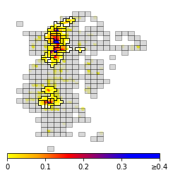

이용 패턴을 반영한 공간 단위 생성
Development of an enhanced base unit generation framework for predicting demand in free-floating micro-mobility
격자의 크기·경계에 따라 수요 집계가 달라지는 MAUP를 줄이기 위해, 시공간 이용 패턴으로 지역을 통합하는 연구입니다.
- 방법: 주요·보조 지역 구성 → 시공간 군집화
- 비교: 두 도시의 전동킥보드 자료와 고정 격자



연구 문제
자유 이동형 이동 수단은 정해진 대여소가 없어 수요를 지역 단위로 집계해야 합니다. 고정 격자는 크기와 경계에 따라 수요 분포가 달라지고, 이용이 없는 지역과 수요가 집중된 지역이 함께 생깁니다. 이 공간 단위 설정 자체가 예측에 미치는 영향을 연구했습니다.
접근 방법
- 기본 지역 구성: 대여·반납 위치를 이용해 기본 격자와 대표점을 구성합니다.
- 주요·보조 지역 결합: 이용량으로 지역을 나누고 이용이 적은 보조 지역을 가까운 주요 지역에 결합합니다.
- 시공간 통합: 시간별 수요 표현과 공간 표현을 만들고 계층적 군집화로 지역을 통합합니다.
- 예측 비교: Kansas City·Minneapolis의 공유 전동킥보드 자료에서 250m·500m·750m 고정 격자와 비교합니다.
기여
제1저자로 공간 단위 생성 프레임워크 연구에 참여했습니다. 모델 선택에 앞서 예측 대상의 집계 단위를 설계한다는 점이 핵심입니다. 공개 연구 설명은 과도한 0 수요와 극단 수요의 완화 및 예측 개선을 보고하며, 여기에는 확인되지 않은 개선율을 추가하지 않았습니다.